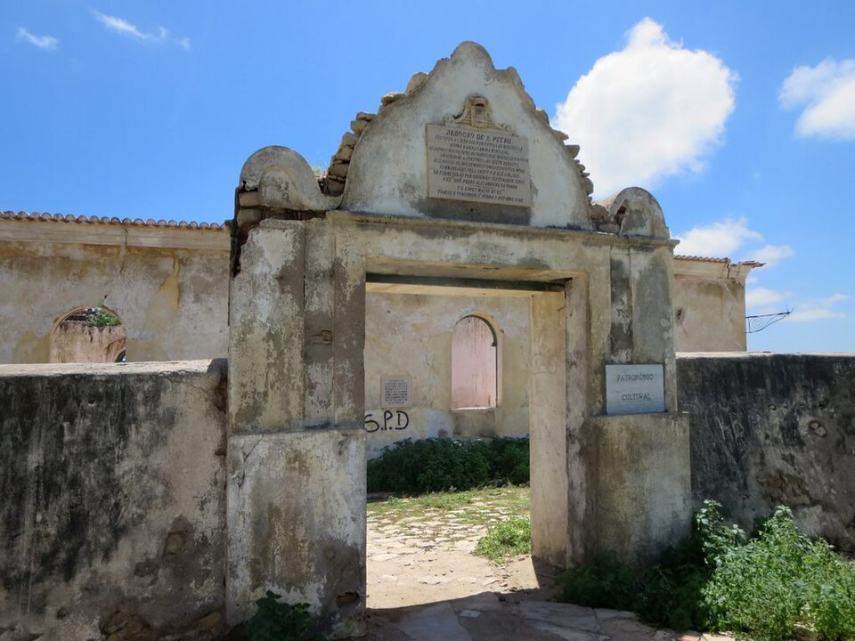

Cultura e monumentos · Catumbela, Benguela
Reduto de São Pedro de Catumbela
Pequeno forte no alto de um morro sobre o rio Catumbela, entre o Lobito e Benguela. A primeira pedra foi lançada a 5 de outubro de 1846, como diz a inscrição sobre o portão. Foi classificado como monumento de interesse público em 1954. Em 2024 estava muito degradado e à espera de restauro: confirme o acesso antes de ir.
Informação prática
- Horário
- Por confirmar
- Morada
- Catumbela, Benguela
- Preço
- Preço por confirmar
Verificado a 11 de outubro de 2026. Fontes: Ver Angola (setembro de 2024), Wikipedia. Confirme sempre antes de ir.
É o dono deste lugar? Atualize os dados no Tuende: telefone, horário, preços e fotos. É grátis e confirmamos consigo antes de publicar.
Perto daqui
- Kero Lobito · Centro comercial · 5,2 km
- Aeroporto da Catumbela · Transporte · 7,5 km
- NovaCâmbios (Lobito) · Câmbio · 9,6 km
- Estação do Lobito (Caminho de Ferro de Benguela) · Transporte · 9,9 km
- Colina da Saudade · Natureza · 10,0 km
- Hotel Terminus · Alojamento · 11,2 km
Distâncias em linha reta.
Mais lugares em Benguela
- Baía Azul · Baía Azul, Benguela
- Batuk Restaurante · Restinga do Lobito, Benguela
- Praia Morena · Praia Morena, Benguela
- Igreja de Nossa Senhora do Pópulo · Centro, Benguela
- Restinga do Lobito · Lobito, Benguela
- Museu Nacional de Arqueologia de Benguela · Centro, Benguela
- Farol do Lobito · Lobito, Benguela
- Praia da Hanha · Hanha (Lobito), Benguela
Reduto de São Pedro de Catumbela — Culture and landmarks, Catumbela, Benguela
An 1846 fort above the Catumbela River.
A small fort on a hilltop above the Catumbela River, between Lobito and Benguela. Its first stone was laid on 5 October 1846, as the inscription over the gate says. It was listed as a monument of public interest in 1954. In 2024 it was badly decayed and awaiting restoration: check access before you go.
Prices in Kwanza, opening hours and directions are in the Tuende app (Portuguese and English).